Trip Report: Desolation Seven Summits
Shortly after moving to the Tahoe area I heard about the Desolation Seven Summits and immediately put it on my bucket list. I've criss-crossed Desolation Wilderness, but I'd yet to attempt this loop due to some combination of fear and laziness. With enough Class 2/3 scrambling along the Crystal Range, it always felt like failure was a real possibility and this loop was just beyond my capabilities.
Returning from the Yosemite High Route, I felt confident on mixed terrain and eager for more challenge (what is one to do once there are no more Skurka sufferfests?). My legs felt strong from all the vert I'd gotten in August, so I figured now was as good time as any to give this loop a shot.
Desolation Seven Summits is a loop in Desolation Wilderness that bags seven of the most prominent peaks in the region: Pyramid Peak, Mount Agassiz, Mount Price, Jacks Peak, Dicks Peak, Mount Tallac, and Mount Ralston. Starting from Highway 50, the whole loop is somewhere around 27-30 miles and nets >20,000 vertical feet of elevation gain and loss. Oof!
Here's a Caltopo link to the route.
Recap
I knew the day would be long, and the forecast called for increasing winds so I wanted to get up Pyramid and off the Crystal Range before things started howling. I woke up at 4:00am, drove from Reno to the Pyramid Peak trailhead (really more of a turnoff along 50), and started hiking at 6:11am.
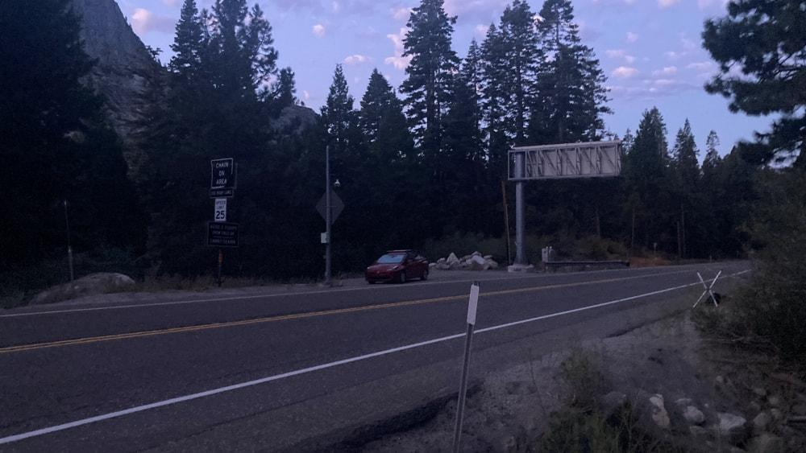
Saying goodbye to Priyanka a little after 6 o'clock, with the sun still below the horizon.
I've hiked and skied Pyramid from Highway 50, so the ascent was quick and familiar. I reached my first summit in a little over 2 hours, feeling optimistic by how solid my legs felt.
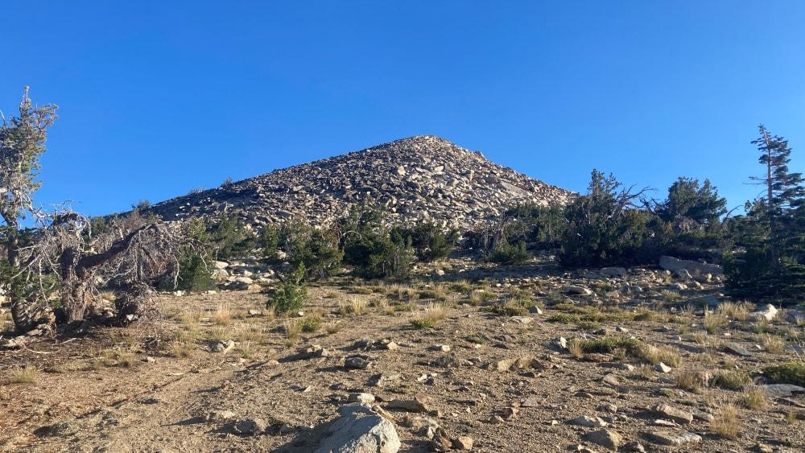
Looking up at the talus field that comprises the final 100-200 vertical feet of Pyramid Peak.
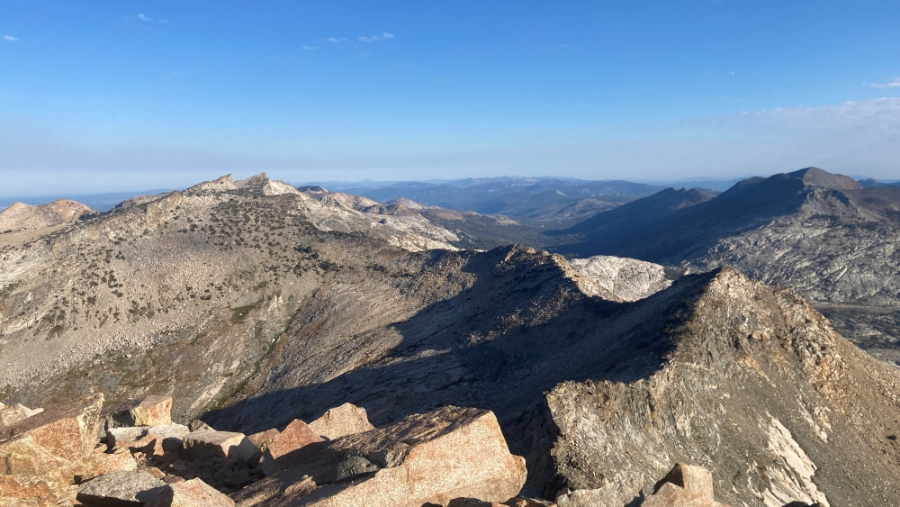
Looking north along the Crystal Range from Pyramid. Agassiz is the overhung peak on the left that looks like Mount Crumpit, with Price barely visible behind it.
I'd never descended north off Pyramid Peak, though I'd frequently looked at it from the summit and thought, "no way." I calmed my nerves about heading into the unknown by taking a couple deep breathes and committing to take it slow and safe. Hiking solo, I didn't want to get into any situation where I couldn't backtrack.
I stashed my poles, then descended using all fours. Despite the north side of Pyramid being steeper than the south, it really wasn't all that bad. The talus felt stable, and pretty quickly I found myself along the ridgeline.
There were a couple chutes to the west side of the ridge that looked promising, but I remembered reading to continue along the ridge until you got to a Class 4 block before turning left. I skipped along until I could skip no longer, then turned down and off the ridge. The chute was obvious and easy Class 2—it might have gone all the way but the last 10 feet looked cliffy so I opted to work along a small slab system to the right until I found stabler footing.
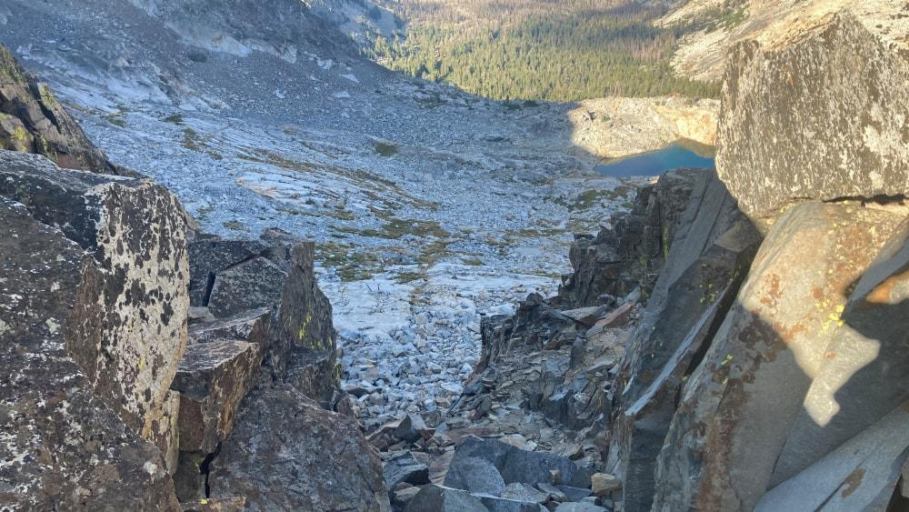
Looking west down the chute I took off the ridgeline.
Once down, I countered along the interface between flat slabs and talus above, which made travel quick. Ascending Mt. Agassiz was a bit sandy but trivial. Encouraged by progress, I took a quick snack and photo break at the summit.
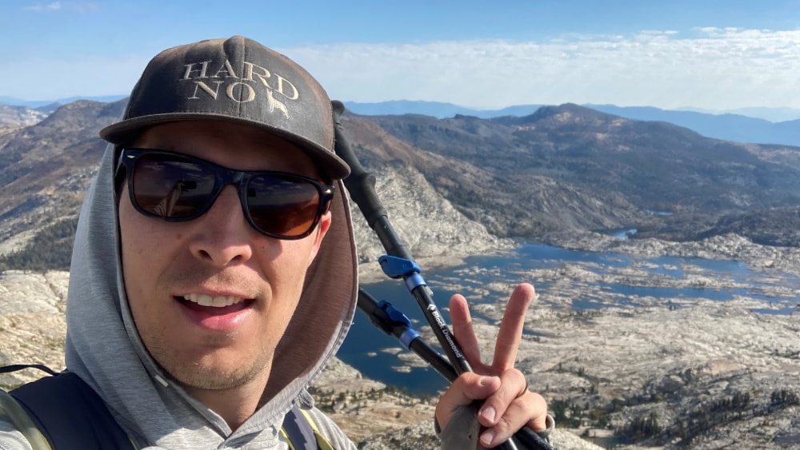
Photo evidence from Mt. Agassiz, summit #2.
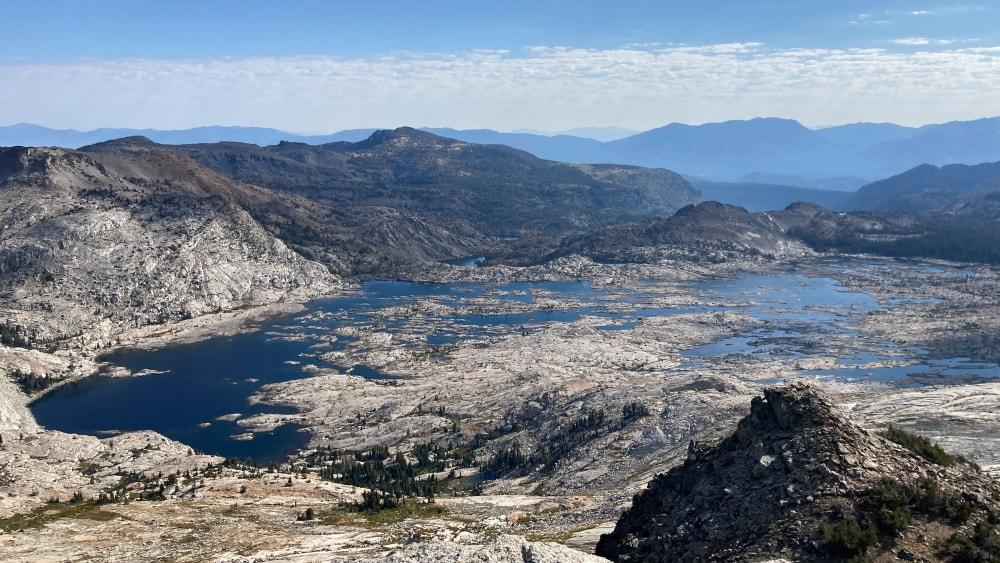
Lake Aloha (I think from Mt. Agassiz) looking prestine mid-morning.
Traversing from Agassiz to Price was super quick, less than a half hour I think, and mostly just along the ridgeline. The summit is easy when approaching from the southwest. I was stoked to be at summit #3 in as many hours.
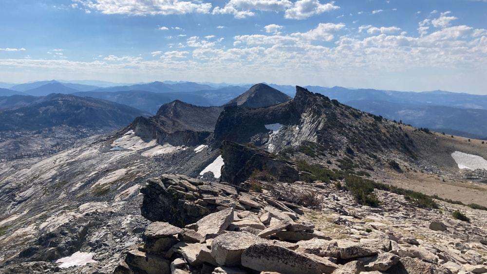
Looking back at the Crystal Range from the summit of Mt. Price. Agassiz AKA Mt. Crumpit is distinctly overhung, with Pyramid Peak as the southernmost high point behind it.
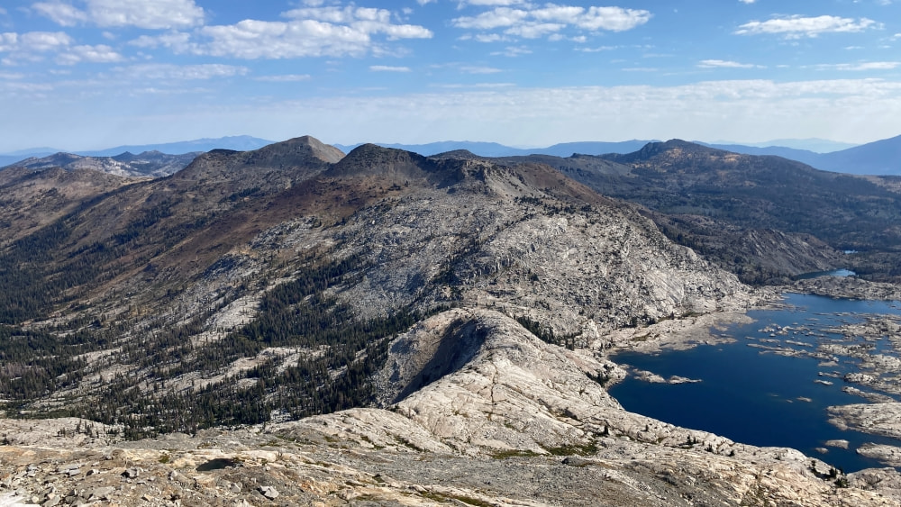
A look at what's ahead: Mosquito Pass would be my next objective. It is the low point where the granite-slabbed ridge heads. From there, ascend the ridge on the opposite side to get to Jacks Peak, and later Dicks Peak behind and to the left. By comparison, Tallac looks like a little green mound off in the distance to the right.
The descent of Price was the crux of the whole route in my mind. I'd never been atop Price, but you can see from the west that its east face is a steep granite wall. Would I be able to find a route down? Online beta said that the easiest route was to descend first down the west shoulder, then contour to get to a gully in the north ridge, where you could then safely descend. Comments also made it seem like finding this route might be tricky, and some folks had just descended straight off the peak along the north ridge.
From Mt. Price I could clearly see what looked like a good gully along the west ridge, so I decided to give this "easiest way" a shot, even if it was a bit circuitous. It was impossible to tell from the summit where you might actually be able descend toward the east.
The gully I spotted on the west ridge was good and easy, just a few hundred feet of walking and Class 2 to get into the top of the drainage northwest of Price. Looking back northeast to the ridge, there were two obvious gullies to try, so I opted to ascend the first/closer one, figuring that if it didn't go I would just backtrack and try farther north.
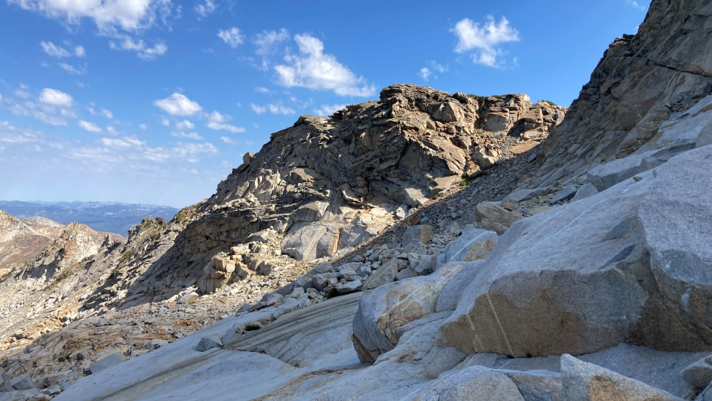
My view looking northeast trying to find a route down from Mt. Price. The summit is out of frame up and right. The gully I chose (i.e., the correct one) runs from the center of the picture up and to the right, along the sun-shade line.
Regaining the ridge, I was stoked to find very pleasant descending in front of me. I was confident I'd be able to get down to Mosquito Pass without getting in over my head.
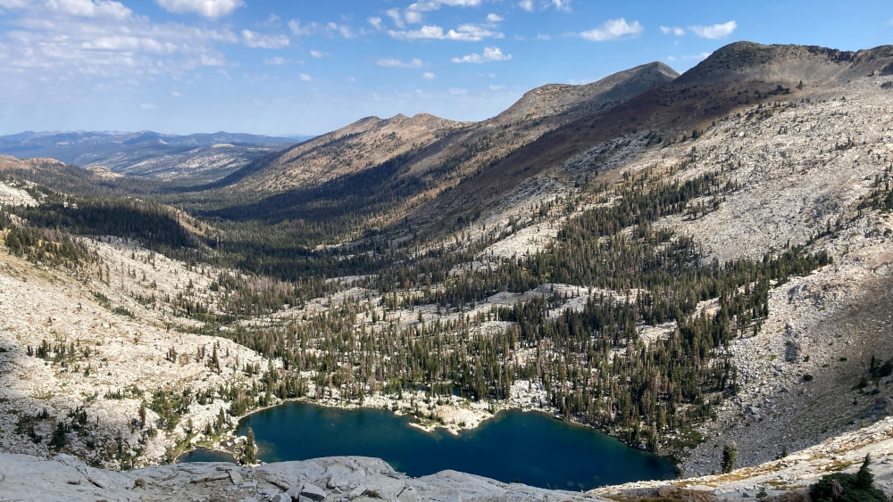
View north of Clyde Lake and Rubicon/Rockbound Valley.
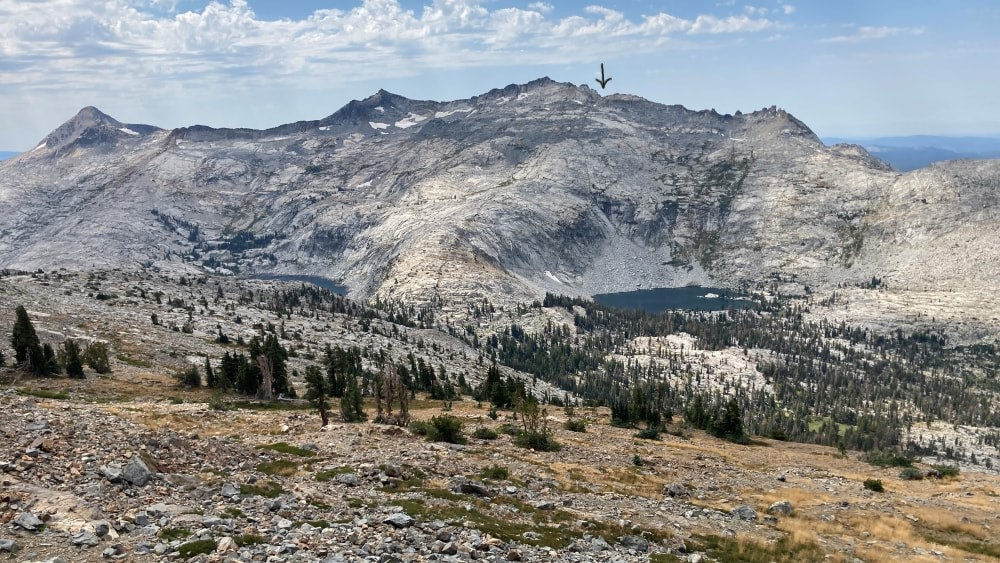
Looking back at the Crystal Range while ascending Jacks. An arrow points to the notch I'm 99% sure I descended from. I think the easiest path up Price would be much less obvious and harder to find if you were traveling in the opposite direction.
Ascending Jacks I was starting to tire and run low on water. The last water I'd crossed was between Pyramid and Agassiz, and I expected that I wouldn't see any until reaching Gilmore Lake. The final 400 feet up Jacks were loose, sharp talus—more annoying than dangerous—and soon I found myself at the summit with the wind starting to kick. Relatively speaking, Jacks is probably the most remote of any of the summits on the route, so while I was 4/7 of the way there, I was really in the thick of things.
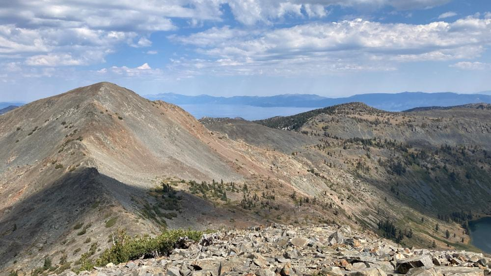
Looking east at Dicks Peak with Lake Tahoe in the background.
The traverse from Jacks to Dicks was basically "just follow the ridge." There were one or two short spots with some Class 2/3 down climbing, which easily could have been avoided by contouring to the left/north. But I was tired and eager for Gilmore, so I charged straight through it and was fine. Despite Dicks Peak looking far away, the traverse took less time than I expected. That's not to say it was easier than expected, because by the time I made it to the summit of Dicks Peak, I was toast.
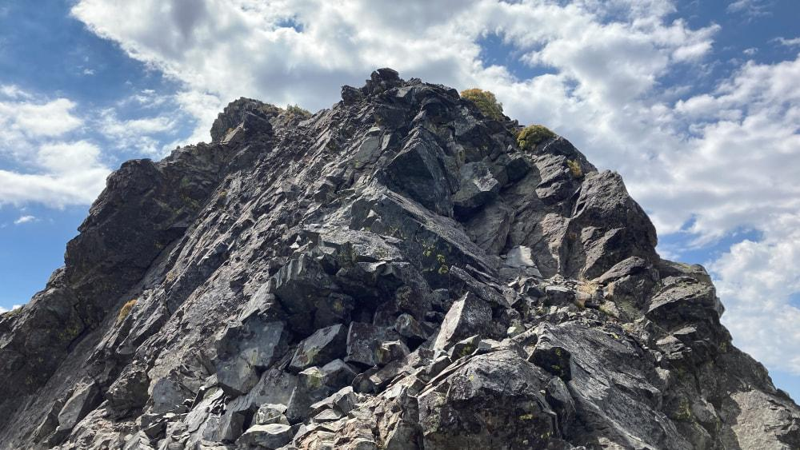
Looking back at a small section of Class 3 downclimbing.
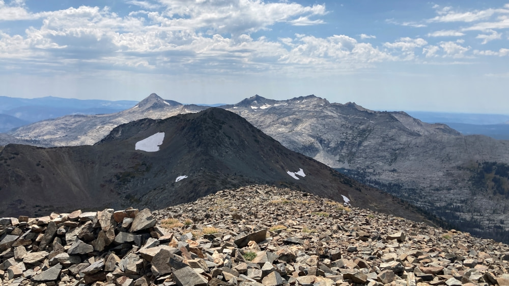
From the summit of Dicks Peak, Jacks Peak is shaded in the foreground while the Crystal Range sits behind it. From left to right, you get a good view of Pyramid, Agassiz, and Price.
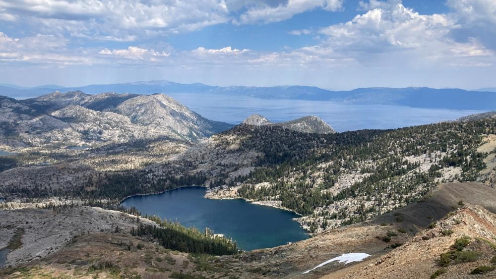
Dicks Lake (center) with Tahoe now fully in view. I think some of the northern sections of Desolation Wilderness are underrated.
I made it to Dicks Pass without trouble, stoked to be back on trail after the last ~4-5 hours of off-trail wandering. It felt easier to run than walk downhill, so I let me body carry me and jogged most of the way to Gilmore Lake. Thirsty, I filled my bladder up with electrolytes, splashed some water on my salt-covered face, and set out for Tallac.
It was mid-afternoon by this point and the sun was high. I could tell I was tired because it felt like I slowed to a crawl by the time I reached the top of Tallac. I checked in with my partner to let her know my progress, but otherwise kept moving. While the technical parts were over, there was still a lot of mileage to go. I think it was ~3:30pm.
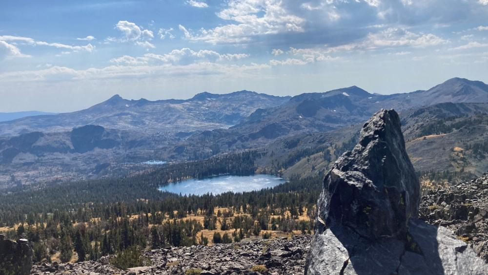
Looking west from the summit of Tallac back at Gilmore Lake and the five other peaks I'd summitted so far. You can tell I'm getting tired by the diagonal horizon line.
Fortunately, the next stretch was just to return to Gilmore Lake then follow the PCT to Lake Aloha. Unfortunately, I feel like passing Susie and Heather Lakes always take a lot longer than they look on the map—the trail meanders and switchbacks quite a bit.
By the time I arrived at Lake Aloha I was starting to mentally bonk and really feel it. I sat down in some shade, ate my last peanut butter tortilla, and gave myself a little pep talk.
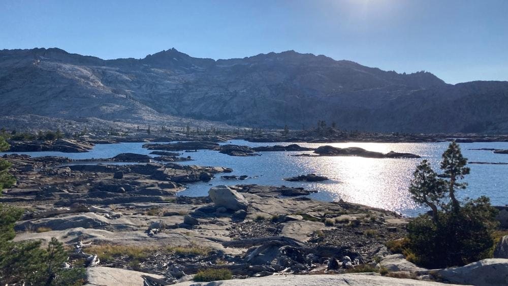
Lake Aloha with a late afternoon glare.
Hiking alongside Aloha, I found a little extra energy thanks to the peanut butter and felt like I was moving at a solid clip.
I intended to follow the PCT to Haypress Meadows, where I would turn off and go up the ridgeline to Ralston. Unfortunately, I messed up and followed the trail to Lake of the Woods by accident, only realizing where I was when I arrived at its banks. Shoot!
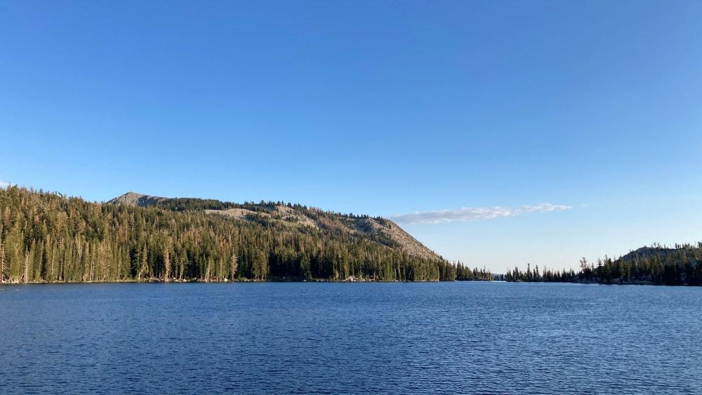
Lake of the Woods looking tranquil in the late afternoon. I saw lots of people camping and soaking in this view as I moved around the lake. Mt. Ralsten is the distant peak on the left. Why is it so far away?
Backtracking wasn't palatable, so I pulled out the map and saw that the southeast side of the lake looked fairly gentle. I figured it would be open forest, so I decided to just contour around and then head cross-country up the forest until I hit the ridge. My gamble ended up paying off, as forest was fairly easy going. Any vert I added by descending to Lake of the Woods I made up by not having to descend from the small hill along the ridge just south of Haypress Meadows.
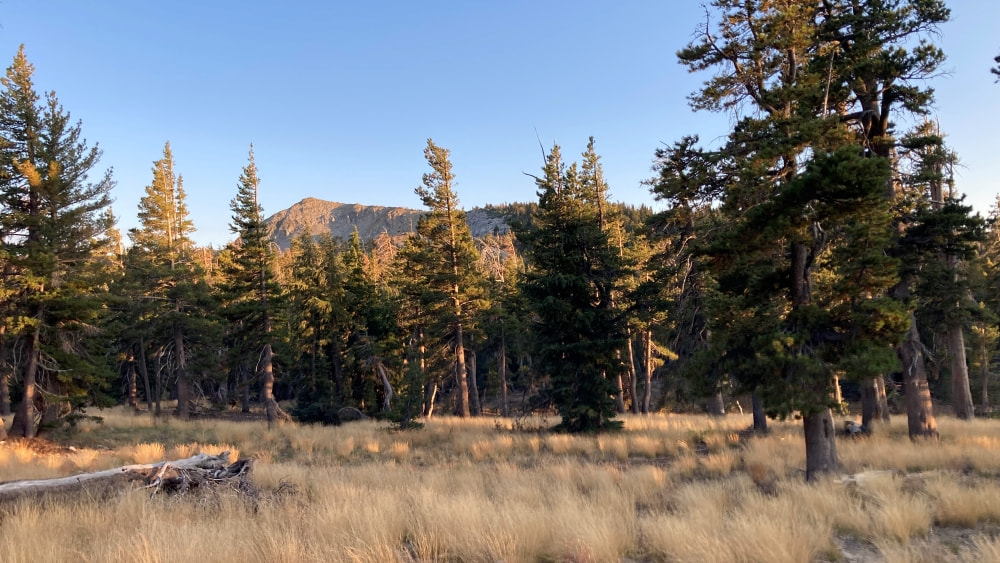
Ascending through open forest toward Ralsten. Why is it still so far away?
There was a trail along the ridge ot Ralsten, which I didn't expect but was happy to find because it meant I could turn my brain on auto-pilot. I cruised along in shade, arriving at the summit just as the sun finally set behind Pyramid Peak.
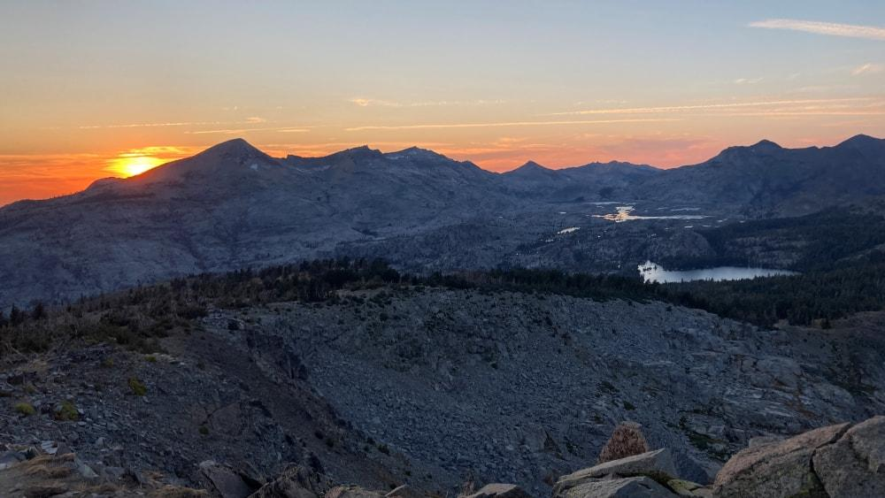
Sunset from Ralston. Looking back northwest gave a great view of Desolation and all that I had traversed during the day. All seven peaks complete!
Stoked I'd bagged the final summit, the only thing left to do now was get back to the car. My legs were noodles, but I jogged the majority of the switchbacked descent to Highway 50. I was surprised my knees felt so good after all this punishment. Moving through the Caldor Fire, I had to pull my headlamp out for the final couple miles. It was dark by the time I got to the road, so nobody was going to stop and give me a hitch. Running the 2-3 miles along Highway 50 to get back to Priyanka at 9:00pm felt like the masochistic cherry on top of an insane day. I got back to the car at 9:10pm, almost exactly 15 hours from when I started.
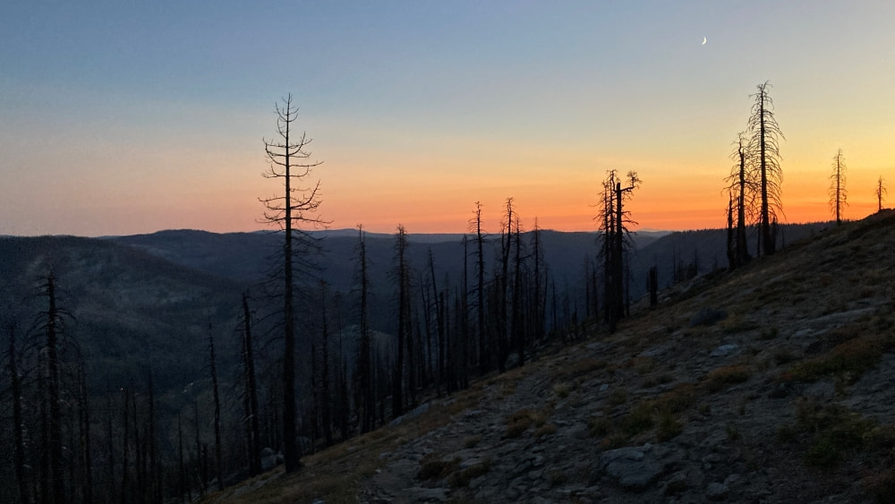
Waxing crescent above the burn area of the Caldor Fire while descending during the waning light of the day.